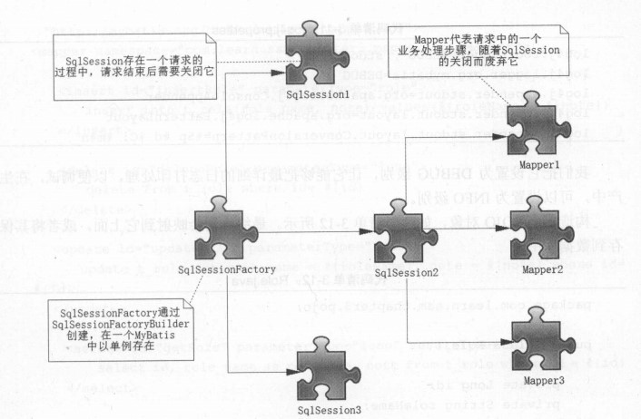

对于MyBatis内容的一些补充
MyBatis中各组件的生命周期
SqlSessionFactoryBean
- 作用是创建
SqlSessionFactory - 创建成功后失去作用，销毁
SqlSessionFactory
- 可以看作是一个数据库连接池，作用是创建
SqlSession接口对象 - MyBatis本质是对数据库的操作，创建后要长期保存，直至不再使用MyBatis应用，生命周期等于MyBatis生命周期
SqlSession
- 可以看作为一个数据库连接（
Connection对象），应存活再一个业务请求中，处理完整个请求后关闭，归还给SqlSessionFactoryMapper
- 由SqlSession创建，生命周期应小于等于SqlSession的生命周期
- 代表一个请求中业务的处理，只存在于一个请求中，一旦处理完相关的业务，就应该飞起
映射器（Mapper）
select元素
自动映射和驼峰映射
- 自动映射
setting元素autoMapperBehavior选项- NONE : 不进行自动映射
- PARTIAL : 默认值，只对没有嵌套结果集进行自动映射
- FULL : 对所有结果集进行自动映射
- 属性名与字段名相同或者在查询语句中定义别名使两者相同
- 驼峰映射
- Map集合
public List<Role> findRoleByMap(Map<String,Object> parameterMap)- Map集合键为参数名，值为参数值
- 注解
@Param - JavaBean